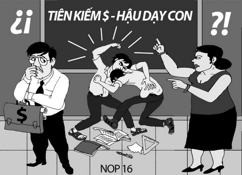
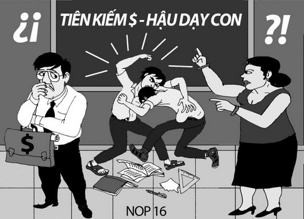

Bạo lực học đường

 

Bạo lực học đường là gì?
Theo khoản 5 Điều 2 Nghị định 80/2017/NĐ-CP thì bạo lực học đường là hành vi hành hạ, ngược đãi, đánh đập; xâm hại thân thể, sức khỏe; lăng mạ, xúc phạm danh dự, nhân phẩm; cô lập, xua đuổi và các hành vi cố ý khác gây tổn hại về thể chất, tinh thần của người học xảy ra trong cơ sở giáo dục hoặc lớp độc lập.
Phân loại bạo lực học đường
Bạo hành học đường tồn tại ở rất nhiều hình thức khác nhau tùy vào nhiều nhóm đối tượng học sinh khác nhau. Bao gồm:
Bạo lực về thể chất: Đánh đập, bứt tóc, xô đẩy, trấn lột, đổ đồ ăn lên người…
Bạo lực bằng lời nói: Xúc phạm, bôi nhọ, sỉ nhục, bắt người khác làm theo ý mình.
Bạo lực xã hội: Phân biệt đối xử, cô lập, tẩy chay, nói xấu, bêu rếu xung quanh hay thậm chí là trên mạng xã hội.
Bạo lực điện tử: Uy hiếp bằng các phương tiện điện tử như gọi điện, nhắn tin, đe dọa và bêu rếu người nào đó trên mạng xã hội.
Nguyên nhân dẫn đến bạo lực học đường
Bạo lực học đường gia tăng, có nhiều nguyên nhân dẫn đến khác nhau, trong đó:
Nguyên nhân chủ quan: Do đặc điểm tâm lí lứa tuổi: tính hiếu thắng, muốn thể hiện bản thân; những mâu thuẫn phát sinh qua giao tiếp; học sinh học bị ảnh hưởng bởi cảnh bạo lực trong phim ảnh, sách báo; bậc phụ huynh thiếu sự quan tâm giáo dục con em về ý thức phòng tránh bạo lực.
Nguyên nhân khách quan: Các hình thức kỷ luật về bạo lực học đường chưa có tính răn đe giáo dục đúng mức; bị bạn bè lôi kéo; sống trong gia đình thường xuyên có hành vi bạo lực hoặc bị gia đình tạo nên áp lực điểm số, thành tích,…
Biện pháp phòng ngừa bạo lực học đường
Tuyên truyền, phổ biến nâng cao nhận thức của người học, cán bộ quản lý, giáo viên, nhân viên trong cơ sở giáo dục, gia đình người học và cộng đồng về mối nguy hiểm và hậu quả của bạo lực học đường; về trách nhiệm phát hiện, thông báo, tố giác hành vi bạo lực học đường; ngăn ngừa và can thiệp kịp thời đối với các hành vi bạo lực học đường phù hợp với khả năng của bản thân;
Giáo dục, trang bị kiến thức, kỹ năng về phòng, chống xâm hại người học; phòng, chống bạo lực học đường; bạo lực trẻ em trên môi trường mạng cho người học, cán bộ quản lý, nhà giáo, nhân viên của cơ sở giáo dục và gia đình người học; giáo dục, tư vấn kiến thức, kỹ năng tự bảo vệ cho người học;
Công khai kế hoạch phòng, chống bạo lực học đường và các kênh tiếp nhận thông tin, tố giác về bạo lực học đường;
Tổ chức kiểm tra, giám sát, thu thập và xử lý thông tin liên quan đến bạo lực học đường;
Thực hiện các phương pháp giáo dục tích cực, không bạo lực đối với người học.
Biện pháp hỗ trợ người học có nguy cơ bị bạo lực học đường
Phát hiện kịp thời người học có hành vi gây gổ, có nguy cơ gây bạo lực học đường, người học có nguy cơ bị bạo lực học đường
Đánh giá mức độ nguy cơ, hình thức bạo lực có thể xảy ra để có biện pháp ngăn chặn, hỗ trợ cụ thể
Thực hiện tham vấn, tư vấn cho người học có nguy cơ bị bạo lực và gây ra bạo lực nhằm ngăn chặn, loại bỏ nguy cơ xảy ra bạo lực.
Biện pháp can thiệp khi xảy ra bạo lực học đường
Đánh giá sơ bộ về mức độ tổn hại của người học, đưa ra nhận định về tình trạng hiện thời của người học
Thực hiện ngay các biện pháp trợ giúp, chăm sóc y tế, tư vấn đối với người học bị bạo lực; theo dõi, đánh giá sự an toàn của người bị bạo lực
Thông báo kịp thời với gia đình người học để phối hợp xử lý; trường hợp vụ việc vượt quá khả năng giải quyết của cơ sở giáo dục thì thông báo kịp thời với cơ quan công an, Ủy ban nhân dân xã, phường, thị trấn và các cơ quan liên quan để phối hợp xử lý theo quy định của pháp luật.
Bao cao giua Ky
Phuoc Huy | Tuan Khanh | Quy Em
HTML & CSS by Tuan Khanh design